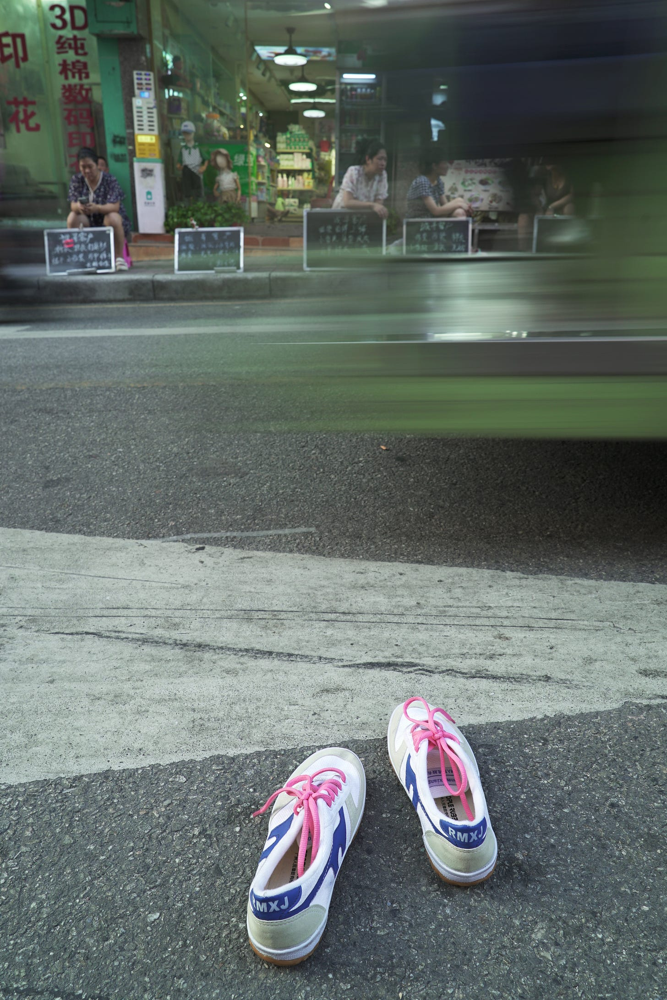

Who is Huang Xueqin? - WOMEN我们
Table of Contents
The events here match Huang Xueqin's criminal case files. The same Huang Xueqin faces us and the police. We seek a different presentation of such "evidence of guilt." This is the history we tell.
Jan 25, 2024
Authors Lin Yaming & Mai Diuti
Editor Suo Luoshu
Photos Fang Yue
Translator Human Rights in China
On September 22, 2023, the trial of Huang Xueqin and Wang Jianbing for "inciting subversion of state power" began at the Guangzhou Intermediate People's Court.
It was difficult to even get to the courthouse, which had been surrounded by red barricades the night before. According to a driver who was familiar with the area, these roads usually had lots of parked cars and traffic could usually move freely.
As it was a nominally public hearing, Wang Jianbing's father as well as Huang Xueqin's father and brother were able to enter the courtroom. There were also four strangers in the gallery.
Huang Xueqin insisted on not pleading guilty and not accepting the sentence, telling her lawyer early on that no matter what the outcome of the first trial was, she would definitely appeal. During her closing statement in court, Huang Xueqin made this declaration accordingly: Writing articles was out of journalistic instinct and professional conscience. Such activities are meant to bring progress to the country, she had not thought of overthrowing the regime. Everything she did was for the improvement of the country, and she hoped to bring kindness and a positive and progressive spirit to society. She is aware of the risk for her own safety and will face such a situation one day, but she is willing to bear the consequences.
Two years ago, Huang Xueqin and Wang Jianbing disappeared silently, but the iron fist did not have the power to erase the memories of them. We interviewed Huang's friends to try to piece together what she had experienced in the two years before her arrest. Huang Xueqin's story is so important because it is not just to remember but also a means to speak out. Her story and experience still inspire the vast majority of people today – people who are at a loss in the face of reality, people with a conscience, people who want to do something, or people who simply want to rebuild their lives.
Huang Xueqin was first arrested in October 2019 and released on bail in January 2020 after four months of residential surveillance at a designated residence. It was winter in Guangdong, the Lunar New Year was just around the corner, and it was the last period of freedom before the COVID-19 outbreak. When recounting her first arrest, Huang Xueqin could still firmly say, "I still have some trust in the law." But in the three years since, no matter in small communities or the whole of China, tremendous changes have taken place. Today, it is almost unlikely for someone to say the same thing again.
Everything has become so dangerous, as if simply wanting to be an upright person has become a sin. Less than two years between her arrests, Huang Xueqin wrote articles in Guangzhou, focusing on gender-based violence cases, accompanying community partners and victims, and doing many things to bridge community and civic education. In the eyes of some people, what Huang Xueqin did is undoubtedly right, important, brave, and precious. In the eyes of the system, however, what she has done, the articles she wrote, the people she associated with… All are incriminating evidence.
The events described here are the same as those in Huang Xueqin's criminal case files. The Huang Xueqin before us, and the Huang Xueqin before the police, is the same person. If this constitutes evidence of guilt, we also hope that such “evidence of guilt” can be presented in a different way. This is the history we tell.
Figure 1: Photo of Huang Xueqin holding a #MeToo sign, taken in Singapore.
Foreshadowing #MeToo @ATSH
Before reporting about #MeToo, that is, before I was involved in the Luo Xixi case, I had already collected a lot of stories when conducting surveys. I did have a plan to use the #MeToo trend, so I decided to spark the #MeToo movement in China as well, to get Chinese people to pay attention to sexual harassment.
-–—Interview with Xueqin Huang, University of Michigan, "A Comparative Case Study of Global Feminism"
The WeChat public account “ATSH” was permanently banned on February 28, 2018. ATSH stands for Anti-Sexual Harassment. The account was founded by Huang Xueqin in 2017 when she initially wanted to set up a platform to send out surveys to female journalists, collecting their experiences of sexual harassment.
Huang Xueqin worked as a journalist since graduating from university in 2010. For the first five years of her career, she worked in traditional media, first at the Guangzhou bureau of the China News Agency covering news about senior officials and foreign affairs, then briefly at Hong Kong's Ta Kung Pao, and later in Guangzhou's New Express News, where she did social and investigative journalism.
After becoming an independent journalist, for a period of time Huang Xueqin contributed to the in-depth reporting of Nandu Weekly, a prestigious investigative reporting team whose coverage of Chongqing Vice Mayor Wang Lijun in late 2012 was monumental in the history of Chinese journalism. While working with Nandu Weekly, Huang Xueqin traveled alone to minefields in northern Cambodia. Many villages there still had numerous landmines left behind from civil war, where villagers still live and coexist on the edge of death.
In 2017, the #MeToo movement took off on social media in the English-speaking world, while Huang Xueqin was participating in the Asian Journalists' Fund Visiting Scholar Program at the National University of Singapore. After chatting casually with several female reporters, Huang Xueqin found that many of them had experienced different degrees of sexual harassment: “Even tough female war correspondents were touched on the butt in public by the editor-in-chief.” She recounted a similar experience as well.
When she decided to investigate the sexual harassment of female journalists, she first asked reporters she was familiar with, but most of them refused to come forward directly. The perpetrators of harassment were still media executives. Some were worried about retaliation, some thought they should consider their husbands and children. One journalist promised to come out with her to protest, but the night before she received a call from her mother-in-law, asking her not to bring shame to the family. In the end, Huang Xueqin alone took to the streets in Singapore, holding up a sign in response to #MeToo.
At that point, Huang Xueqin knew almost no feminist activists. In an interview, she mentioned that she had followed the 2014 Xiamen University sexual harassment case and the 2016 incident in which Cheng Xi, a reporter from Southern Daily, the official newspaper of the Guangdong Provincial Party Committee, sexually assaulted an intern from the School of Journalism at Jinan University. The former case, after more than half a year of reporting and advocacy by feminist organizations, was resolved, and led the Ministry of Education to issue its first departmental guidance document against sexual harassment. In the latter case, after the female client suffered tremendous pressure from the authorities in order to "maintain social stability,"1 the case ended with the procuratorate deciding not to prosecute. The turning point between the two cases was the arrest of feminist activists, known as the “Feminist Five,” in 2015. Feminist activists had finally become targets of annihilation by the state apparatus.
In 2016, when studying at the School of Journalism at Jinan University, Huang Xueqin was puzzled by various remarks questioning victim(s), and was furious at the silence of the media and her peers: "…you claim to be watchdogs who supervise others, yet you don't care when your own media does the same nasty things.” She went to the campus to do some interviews and shot a short video, asking people about their views on the Cheng Xi incident. This was her first time reporting on gender issues.
Female reporters were also unwilling to talk about their stories of sexual harassment with their real names. They discussed with Huang Xueqin whether a questionnaire could be distributed instead, so that they could choose to answer anonymously. Thus, Huang Xueqin registered the WeChat public account ATSH. At the end of the questionnaire, she stated that one could use her real name or remain anonymous, and could also leave her contact information for further communication. This questionnaire was widely circulated, and eventually 1,762 people participated and 416 valid samples were collected. Among them, 83.7% of female reporters suffered sexual harassment of varying degrees and forms, 42.4% experienced multiple incidents of sexual harassment, and 18.2% encountered sexual harassment more than 5 times.
It was this questionnaire that made Huang Xueqin one of the pioneers of the #MeToo movement in China. On October 15, 2017, Hollywood producer Harvey [Weinstein] was involved in a sexual harassment scandal. On the same day, Luo Xixi, a woman in Silicon Valley, posted a thousand-word essay on Zhihu, China's Quora, in response to a question about “How to evaluate Chen Xiaowu of Beihang University.” In the post, she shared her experience during her PhD studies at Beihang University 12 years ago, when deputy instructor Chen Xiaowu summoned her to his sister's house and almost forced himself upon her.
Chen Xiaowu is a habitual offender. The revelations gathered responses from other women who had also been sexually harassed by Chen, and they formed a WeChat group to share testimonies and evidence. In late October 2017, Luo Xixi contacted the Discipline Inspection Commission of Beihang University and reported Chen Xiaowu with her real name. However, her report was akin to “throwing a pebble into a deep pool, with no ripples or responses.”
At the point Luo Xixi came across this questionnaire, her negotiations with Beihang University had already come to a deadlock. As the only real-name whistleblower, she wanted to ensure her voice was louder, so she filled out Huang Xueqin's questionnaire and left her phone number. In the first phone call, Huang Xueqin raised questions about some details, which made Luo Xixi feel that she had met a real reporter. After the call, Luo Xixi provided evidence such as recordings, and added Huang Xueqin into the "Fruit Candy" WeChat group formed by the accusers. After thoroughly reviewing Luo's accounts and objective evidence, Huang Xueqin verified the facts and was determined to help the victims speak out to raise awareness to this matter. To this end, Huang Xueqin worked from the end of October 2017 to the last day of that year. After the article was firmed up, she also contacted her lawyer friends. Among the lawyers who helped her, Sichuan lawyer Wan Miaoyan later became a legal practitioner deeply involved in the #MeToo cases.
With the help of Lawyer Wan, Huang Xueqin helped the victims organize an exposé, put forward reasonable demands, and suggest that colleges and universities establish a mechanism to prevent sexual harassment. After obtaining the consent of all the victims, on January 1, 2018, Huang Xueqin began to publish articles exposing Chen Xiaowu on the public account ATSH. On the same day, Luo Xixi disclosed her real name on Weibo and confronted her former tutor.
A female doctoral student reported, under her real name, that Professor Chen Xiaowu of Beihang University sexually harassed female students. ATSH continuously posted articles and evidence for five consecutive days, public opinion hit a boiling point, and media interview requests flooded in. Huang Xueqin was busy behind the account, responsible for screening reliable media outlets, recommending them to Luo Xixi for interviews, and providing documentation support.
Due to the accusations, Chen Xiaowu had already been suspended from teaching and related positions by Beihang University. On January 14, amidst the public outcry, Beihang University announced that it would revoke Chen Xiaowu's title of “Yangtze River Scholar.” This is a prestigious academic tile in China and is associated with a large number of important research projects and scientific research funds. On January 16, at a press conference, the Ministry of Education declared that it had urged all universities to investigate incidents of sexual harassment by teachers, and would look into establishing a long-term mechanism for preventing sexual harassment at colleges and universities—the same initiative that the women had proposed in their reports.
The way things developed differed from Huang Xueqin's original plan. She had thought that the sexual harassment experienced by journalists would become a flashpoint, but she did not expect that a series of sexual harassment cases in the education field would come to her door: the case of Shen Yang at Peking University, the case of Li Yiyi in Gansu, and even the case of Tao Chongyuan, a male graduate student who committed suicide—"bang bang bang bang, they all came out like this."
The topic, whether in the news industry or universities, had poked at the sensitive areas of the regime. On February 24, 2018, ATSH posted a notice saying that it had completed an investigation report on "Sexual Harassment of Female Journalists in China" in cooperation with the Guangzhou Gender Education Center. Four days later, on February 28, the last day of the month, the ATSH account, along with all of its articles, was deleted.
Figure 2: These white sneakers represent photographer Fang Yue's impression of Huang Xueqin. She took a set of photos to imagine that Huang Xueqin was still living freely in Guangzhou.
"Encountering Trouble"
Nobody is an island. My speaking out can have an impact, can change certain things, and can give everyone a sense of empowerment to say “let's do things together.” Especially women, I think women are really more able to sympathize and understand each other, you know, easily feeling the feelings of other people and expressing them openly. Maybe I wouldn't do this for myself, but I do it for you, and for her, and so that more women can stand up. In fact, this kind of mentality has always gotten me fired up.
-–— The University of Michigan, "Comparative Case Study of Global Feminism: Interview with Huang Xueqin."
The articles ATSH already published didn't leave a record, but what bothered Huang Xueqin more was the more than ninety stories of sexual harassment that had been collected through the ATSH platform. When writing her report, she only copied over some of them, [and the rest were lost when the account was removed].
Even so, on March 8, 2018, International Women's Day, the Guangzhou Gender Education Center and ATSH held a press conference together for the "Sexual Harassment of Female Journalists in China" investigation report, and created a hashtag on Weibo, China's Twitter. In front of dozens of domestic and foreign reporters, Huang Xueqin stood on the stage and shared the details of the report. After her speech, she stood together with Wei Tingting, the head of the Guangzhou Gender Education Center, and let reporters take a photo of them.
Wei Tingting is one of the formerly detained "Five Feminist Sisters," and is active in the fields of gender equality and gender diversity. Since March 2018, with the release of the report on the harassment of female journalists and the launch of the "Send Letters to Alma Mater" initiative by students from 80 universities across the country, and as Huang Xueqin's increasing connections with overseas #MeToo movement participants, such as Luo Qianqian and Wang Ao, she came on the radar of the guobao, or political police. These political police tracked down the higher-ups and editor-in-chief of her former workplace, as well as the editors with whom she had collaborated. They disguised themselves with various identities and casually asked insinuating questions, like what is Huang Xueqin doing? Why does she always write about sexual harassment? Who is behind her? Some editors noticed something was off about these interactions and told Huang Xueqin, but she was unfazed by these little moves behind her back.
In the summer of 2018, Zhang Peng, a professor in the Department of Anthropology at Sun Yat-sen University, was reported for sexual harassment by a student. Alumni and students of Sun Yat-sen University tirelessly advocated through grassroots media and on-campus activities, demanding that the school take action and commit to establishing a long-term anti-sexual assault mechanism. During the efforts to “maintain stability,” a police officer said that #MeToo had been identified as a sabotage activity by overseas anti-China forces, because “the instigators all lived abroad for many years and are targeting China's Yangtze River scholars, with the clear intention of attacking China's academic system.”
Huang Xueqin did not flinch. After she conducted a thorough investigation and verified the evidence, she published an article on the non-fiction column Renjian The Livings, entitled "She Once Thought She Could Escape the Professor's Hands Herself." This article was deleted shortly after being published on WeChat, but it was reposted on 163.com and its app, only to be deleted again. Even though it was deleted three times, the day after it was published, Sun Yat-sen University had no choice but to announce how it was going to deal with Zhang Peng.
Huang Xueqin believes that the #MeToo Movement has made everyone realize that they are not an island. “My speaking out can have an impact, I can change some things and give everyone a kind of power…especially women…maybe I wouldn't do this for myself, but I do it for you, and for her, and so that more women can stand up. This feeling has always been very exciting to me." She takes pride in being a mediator, using every case to help build a supportive network: introducing local lawyers to victims, selecting local journalists, helping victims get to know each other, and allowing social workers to get involved.
In fact, Huang Xueqin was rather like a social worker herself. She once said that in 2018, what she was doing mostly was not the work of a reporter, but rather providing company to the victims. "It was really tiring…maybe three or four nights a week I would talk with them until three or four o'clock [in the morning]." An unnamed colleague said that she remembers Huang Xueqin often spent several hours with traumatized interviewees. Frankly speaking, traumatized people have various types. Some need to talk a lot [about their experience], while some may develop a kind of borderline personality disorder after trauma. Continuous long-term companionship is a very challenging task, and it also significantly drains the energy of the supporter. The person involved in the "Li Xingxing Case" actually turned to [Huang Xueqin] first for help in 2019. Although she always had doubts about the facts and did not make the case public, when this person came to her, she still did her best to support them and created a written record that was thousands of words long.
Beginning in summer 2018, Huang Xueqin became the subject of surveillance. The police stopped skirting around and approached Huang Xueqin directly. They intervened in her relationships with her collaborators, and advised her not to write too much about sexual harassment. After her voice was repeatedly silenced, she had to go underground, transforming from an observer who spoke out publicly into an activist. She also became increasingly involved in the feminist community: referring cases to feminist lawyers, participating in feminist activist petitions, and helping package and mail joint letters. During the Two Sessions2 in 2019, she and her associates sent more than 390 letters to representatives and committee members, calling on the entire society to establish a mechanism to prevent sexual harassment.
Figure 3: Photo of Huang Xueqin before she was detained
Losing Freedom for the First Time”: In an Unnamed “Villa”
Since 2019, defendant Huang Xueqin has repeatedly published provocative articles and remarks on domestic and foreign online platforms and social media that misrepresented and attacked China's government, attacked and slandered China's political system, and promoted ideas subverting state power.
-–—Indictment of Huang Xueqin and Wang Jianbing
Perhaps, under the powerful machinery of the party-state, ignorance and fear can be cultivated, information and news can be blocked, and reality and truth can be distorted. But once one has personally experienced and witnessed it, one cannot pretend to be ignorant, cannot give up on documenting it, and cannot sit and wait to die. The darkness is boundless; the only trace of reality and light left must not be handed over so easily.
-–—Huang Xueqin, “Recording My ‘Anti-Extradition' March”
From early 2019, Huang Xueqin was both studying in Hong Kong and also supporting many victims. In June, her activities as a volunteer companion were paused for a month, when the Anti-extradition protests broke out in Hong Kong, and she participated wearing all white. Faced with the large-scale information pollution of social media behind the Great Firewall, she conveyed her true voice on Matters, a social networking site. "How can a reporter not speak up?"—This was her response when someone warned her about the danger.
She was admitted to the scholarship program for Human Rights Law at the University of Hong Kong that scheduled to begin in September 2019, and was actively pursuing her L.L.M. (Master of Laws) degree. After the June articles about Hong Kong were published, the police went out that night, knocking on the door of her home in Guangzhou and harassing her parents. She had no choice but to continue her study trip to Taiwan, but when she returned to Guangzhou from Taiwan, her passport and exit-entry permit [for Hong Kong and Macao] were confiscated and she was unable to leave the country. In October 2019, she was accused of “provoking trouble” and arbitrarily detained, then placed under residential surveillance at a designated location—a "villa area" near a detention center in Baiyun District, Guangzhou. She and her friends speculated that it might be used to “shuanggui” government officials.3
Huang Xueqin's first enforced disappearance ended on January 17, 2020. On the first night after she was released on bail, she did not choose to go home to sleep. Instead, she gathered a group of friends and insisted on sharing every single detail of her experience inside.
She had just been through an inner war.
The night before her release on bail, the politcal police took Huang Xueqin to a barbecue place. "You see, we have become friends over the past few months. You said before that you wouldn't even eat a vegetable, but now you are sitting here drinking with us."
In the past, Huang Xueqin's attitude had always been very blunt when dealing with them. She wouldn't negotiate with the political police. She was very resistant; her usual approach was to argue head-to-head and push back against every question. "They said, Huang Xueqin, you are wrong. I said, where am I wrong? Tell me, which law says so?"
"I wouldn't eat a single green vegetable,” Huang Xueqin wrote in her diary (this diary was later taken away by the state political police and used as the material to study her ideological changes. The political police believed that she had been brainwashed by foreign forces). Before her first arrest, every time the political police met with her and ordered a large table of dishes, she wouldn't eat a bite. She felt it was taxpayer money.
But on the night before her release, she felt somewhat relaxed. This round of residential surveillance started in October 2019 and lasted for four months. Alone, she had to face more than 20 political police, both male and female. She could not turn off the lights while sleeping, and every time she turned over was recorded. These policemen appear in different guises, tough and smooth-talking. Xueqin likes to drink red wine, so they brought a box of red wine for her, attempting to get her drunk and make her sign an agreement to change lawyers. A female police officer also told Xueqin that she would really rather be at home with her children, but she had to stay here with her.
The police officers told her, “we are not devils, we are normal people.” That day, Xueqin replied: “You have a normal human side and a devilish side. The devilish side may be instilled in you by the system.” For someone who would repeatedly explain to the police what “freedom, the theory of justice, and Foucault's theory” are, this answer was uncharacteristic, indicating a sense of reluctance to continue the debate.
She soon felt ashamed of her little concession. The night she returned home, she had a dream: she was dead and someone was wrapping her body. In the dream, her soul came out of her body and saw that the person wrapping her body was one of the political police. Frustrated, she realized that in some ways the police had succeeded, and she had become less daring in her speech. "Whether I started to feel too much internal friction and became so tired that I didn't want to speak anymore, or I lost my sense of significance and didn't want to speak anymore, either way, this result is what they wanted."
Huang Xueqin's way of saving herself was to tell her friends about her experience of being trapped. She wanted to confirm that she still had a tenacious vitality. "I thought I had been killed, but it seems I am not dead yet." In short, life after her first detention and release began with the desire to "find myself again."
Ye Jue, an artist living in Guangzhou, first met Huang Xueqin at a party after she was released from detention. Huang Xueqin talked frankly about her experience of being under residential surveillance. Ye Jue immediately felt impressed, she recalled, not just because Xueqin's experience was unusual, but because of the temperament she exuded. People in the community often appear helpless, broken, and confused, but Huang Xueqin looked very different. “What a well-rounded person,” Ye Jue sighed. The Huang Xueqin she met was “a very energetic person, who spoke very logically, expressed herself fully, and who was full of drive and energy.”
In the first year of the pandemic, after Guangzhou's lockdown was lifted during the May Day holiday, Huang Xueqin went hiking with some friends. They chatted and laughed freely along the way among the beautiful scenery, but the topic was Huang Xueqin's absurd experience under designated residential surveillance. A feminist friend who was present felt that her experiences could bring about deep trauma, but it seemed that Huang's energy and spirit were no different from before she “went in.”
“She really moves forward courageously, and has a kind of innocence about her.”
Figure 4: Kanglu Textile Area, across from Room 202, No. 149 Xingang West Road, Haizhu District
Thursday's Gathering
Since November 2020, defendants Wang Jianbing and Huang Xueqin used overseas communication software to post information about gatherings, regularly assembled many people for organized gatherings in defendant Wang Jianbing's rented residence, Room 202, No. 149 Xingang West Road, Haizhu District, Guangzhou, and, under the guise of discussing social topics, incited participants' dissatisfaction with China's state power.
-–—Indictment of Huang Xueqin and Wang Jianbing
Starting around 2020, Huang Xueqin began to appear frequently at a certain get-together. The meeting place was Wang Jianbing's home. Later, Huang Xueqin and Wang Jianbing were arrested together largely because of this gathering.
The gathering was held in Room 202. Xiangzi, a labor activist who also attended these parties, said that he did not know that the room number was 202 until Huang Xueqin and Wang Jianbing were arrested and he learned it from the police report. For many people, it was a space without a name, it was the living room of Wang Jianbing's house, it was a place for gathering with different friends on Thursday nights. “No matter which Thursday night, if you opened the door and went in, there would always be someone waiting for you.”
The space was close to Sun Yat-sen University and also near the Occupational Disease Prevention and Treatment Center. For a long time, Wang Jianbing had been planning to wait until his lease expired to move to the suburbs because it would be cheaper. As Wang Jianbing's friends all knew, his financial situation was not very good. After his lease expired, however, he still chose a house in the center of the city, simply because Wang Jianbing had been engaged in labor rights-related work since 2018 and he wanted to make it more convenient for workers to come find him.
Before 2015, such gatherings were popping up everywhere in Guangzhou. Especially in the area near Sun Yat-sen University, under the banners of the Civil Society Center and the Gender Education Center, youth-led grassroots organizations gathered in the vicinity and attracted not only students on campus, but also young people from all over the country who came to Guangzhou.
Alongside the “Occupy Central” movement in Hong Kong, the mass arrests of human rights lawyers, and the arrests of the “Feminist Five,” the gender and labor NGOs nurtured here closed one after another, and some associated scholars have been forced to leave. The diverse campus atmosphere became increasingly subdued. After the pandemic, the gates were tightly guarded, and the number of nearby gatherings declined.
Xiangzi, Wang Jianbing and Huang Xueqin all followed similar paths. They all lived and worked through that period, and their work and lives were closely related to the environmental changes in Guangzhou. They hoped to maintain a space where everyone could return to a state of supporting each other, growing together, and moving forward together.
It is difficult to trace back to when the event first started. Later, it gradually evolved into a regular gathering every Thursday night, and Wang Jianbing, Huang Xueqin, and Xiangzi often hosted gatherings together. But there was no organizer or leader present at the scene. Huang Xueqin was more of an enthusiastic participant, attending two or three times a month.
There was no earth-shattering theme at the Thursday gatherings. Most of the sharing happened casually, and the participants came from all walks of life. “For example, if any of my friends came to Guangzhou that week, I would just invite them to come chat with everyone about whatever they were doing.” The gathering took many forms: mostly peer sharing, about papers they were writing or personal experiences, sometimes just aimless chatting, and sometimes playing mahjong or [a board game called] Legends of the Three Kingdoms.
In an era where being reported on has become the norm—in universities, at work, and online—it could be very difficult for ordinary people to express their thoughts and opinions, or even just say what they cared about, or that they were depressed.
These issues created a rich social sphere. In a normal year, such as around 2010 in Guangzhou, these issues would definitely be discussed enthusiastically in a place where people come and go. But in China during the pandemic era, these issues had become synonymous with the underground and the fringe. Young people with political depression could only gather together on Thursday nights to find some solace there.
The issues discussed included:
Analysis on the future of vocational school students;
The gay community on the factory assembly line;
Sharing misogyny and gossip in the art world;
The division and disintegration of the domestic LGBT community;
Undertaking a mental journey around sex workers and AIDS prevention work;
The path for sanitation workers to defend their rights…
At those gatherings, Xueqin often appeared as a very sincere questioner, "not in a nosy way, but like she really cared about what other people share." Over those one or two years, Ye Jue's impression was that the time passed very quickly. Almost every week, everyone had something new to talk about, such as the news of Zhang Zhan's arrest, or what happened to so and so, and everyone would use Thursday night to discuss it.
When Huang's neighbor and friend Mark went to the party for the first time, she was pleasantly surprised: "I haven't seen so many people in a long time." At that time, people had just emerged from the lockdown caused by the pandemic and recovered to a point where they could go out and meet friends. In the couple of years prior, Mark had also experienced a long period of low energy and was not very willing to go out.
The diversity of the crowd also surprised her. Mark wanted to convey just how diverse a group of people it was: some still in school; some working, some not working; some were activists, and some were not activists; there were artists, all kinds of artists, and people of all kinds of gender orientations…in short, this was a scene she had never seen before at social events.
Xiangzi said: "I can't say this space helped address some big problems. But some people are very anxious and traumatized by the current society. For these people, this space provides a network of mutual support. What this space brings to everyone is not a negative thing; its function is to prevent everyone from sinking further, and hopefully, everyone will come to understand the current reality with a more positive attitude. You can see what other people are doing here and accumulate some strength.”

Figure 5: The roadside job market near Room 202
Civics Class
From December 2020 to May 2021, the defendant Huang Xueqin used overseas video conferencing software to organize and hold "Ten Lessons" program training, using major events and social movements at home and abroad as the content to incite participants to be dissatisfied with China's state power.
-–—Indictment of Huang Xueqin and Wang Jianbing
In addition to the Thursday night gatherings, another thing that Huang Xueqin invested a lot of energy in during those two years was the "Ten Lessons." This class was held in two sessions, with the first session beginning in July 2020 and running 10 weeks in total.
Huang Xueqin posted fliers on WeChat Moments (like Facebook News Feed) and Douban (a Chinese social network platform). "Ten Lessons" wanted to recruit "friends who are curious about the world, pursue fairness and justice, and have a desire for change." She expected to enroll 30 students for the first session. “Zoo,” one of the students in the first session, recalled that there were more than a dozen classmates who attended.
When the first session officially started, some of the course content had already been decided, including general feminist courses such as "China's Centennial Feminist Movement" and "Women in Resistance", as well as "Black Lives Matter," "Examining Technological Sovereignty from the TikTok and Huawei Incidents," and other social issues. The instructors were invited by Huang Xueqin, and the teacher who talked about China's century-old feminist movement was Wang Zheng, an emeritus professor of women's and gender studies and history at the University of Michigan. As early as the 1990s, she traveled between China and the United States, disseminating gender studies theory in academic and activist communities.
On the course flier, Huang Xueqin wrote, "Connect with reality and resist absurdity and ignorance together." The price for "Ten Lessons" was 100 yuan per person. If you attended all the courses, the 100 yuan would be refunded, like a deposit. The second session would start in April 2021. It differed from the first session in that the content of the second phase of the course was "more sensitive" and was almost entirely on the living the life of an activist.
Su Li, an instructor who participated in the second session, said that the content she taught at that time was about activist trauma. "Trauma comes not only from the outside environment, but also from the community." At first, she had thought the course content was very fringe, but after listening in on another class, which was about disability work, she realized that the content of this civics class was very diverse and broad.
Recalling the Thursday night gatherings, Su Li felt that the two activities shared a similar ethos. Huang Xueqin always encouraged friends around her to share their life stories. Here, one could hear content that you can't usually hear, even including content that is not encouraged in other spaces.
Each course spanned 10 weeks. Huang Xueqin often wrote emails to students; both previewing the course content and sharing what she was experiencing and feeling at that moment.
In May 2021, she wrote about the Wenchuan earthquake and the 49 Middle School Incident:
"There have been a lot of things going on recently. It is the anniversary of the Wenchuan earthquake, which made my mood very low, and the incident in Chengdu No. 49 Middle School a few days ago also makes one feel sad. The individual rights protection and self-preservation mentality of the schools and governments, and the lofty statements they issued, seem to have fallen into a Tacitus Trap.4 Some people moved from online anger to offline flower-laying, energized by shouts of "truth"…In the past, when there was still room for civil society, many people (from different cities) were involved in similar cases. Different actions may be initiated. Journalists could go in to dig out the truth, restore the trajectory, and point out management loopholes and existing problems; citizens could mourn and hold wrongdoers accountable, or initiate a petition. Schools could also initiate discussion meetings or internal investigations. Of course, I am very happy that Chengdu still retains the courage to take action and participate in social events."
In June 2021, she wrote:
"Unwittingly, we have arrived in the middle of June. With our heads down, we have "safely" passed by the June 4th incident that still cannot be spoken of or commemorated thirty-two years later. In a country that dares not face the past, in a country that is good at forgetting, all we can do is listen again and again to the accounts of those who lived through it, their angry accusations, their heart-rending shouts, their broken voices floating in history, tearing open the wounds time and time again so that they will not be forgotten.”
While writing about frustration and pain, she often conveyed some lighthearted strength to her friends. She said that reading everyone's emails was like “the feeling of gently opening your palm and finding candy.” During the holidays, she would tell her friends to "travel more with friends. Being with dear friends is a really wonderful thing." She often shared ways to live a good life: “stay rational despite the absurdity of daily life, and find some small entertainment, such as drinking with friends, hiking, printmaking, or watching TV dramas. The second season of “I Told Sunset About You" is out, and I must recommend everyone watch it, it will make life sweet and bright."
Zoo, who participated in both sessions, said that what moved her most at the time was the atmosphere of the community. After the class, Xueqin would encourage everyone to chat amongst themselves, and everyone would share their areas of interest and their own life stories.
Zoo also mentioned something that impressed her very deeply. During the session, within the group of students, there was a person whose behavior involved sexual harassment of others. As the organizer of the course, Huang Xueqin individually spoke with many classmates about the matter, and yet to this day, Zoo does not know who the victim was. Huang adopted a very protective approach towards the victimized girl to avoid secondary harm. This was her experience and her wisdom.
When dealing with the person who had perpetrated the sexual harassment, Huang Xueqin spent a lot of time giving him enough room to speak. Huang asked the perpetrator to withdraw from the community, but also wrote a long letter addressed to him. At the end of the letter, she said, "I still hope that you can take good care of yourself, and if you have depression or anxiety, seek real medical treatment, because illness is not an excuse for making mistakes. If you have problems, you must face them sincerely."
Figure 6: A photo of Huang Xueqin before she was detained
Love
When the color of the rainbow turns into a unified red; when every opening of the mouth becomes a national hymn; when they snap their fingers and an account, a person, an institution, a group, or even millions of people can disappear and be destroyed in an instant; when fear is layered thick and memories are deep and shallow, and tragedies, big and small, are repeated and repeated over and over again; when they say they will use 1.4 billion people to build the Great Wall of Steel…I no longer feel much anger and pain. I just want to hug those we still love tightly. I just want to say to the real ones, we are together.
-–—Huang Xueqin's Facebook, July 6, 2021
In 2021, producer Daxue took the documentary she had just finished to Guangzhou for a screening. After watching the documentary, Huang Xueqin immediately proposed that she would like to organize a few more screenings.
Huang Xueqin arranged a screening in a community where artists gathered. After watching the movie, one of the girls went on to organize a screening at her home, and most of the attendees who came to watch the movie were young people. Right after that, another attendee brought the film to an independent bookstore in the Pearl River Delta. This bookstore only operated for a little over two years before it was closed down. However, it held more than 200 cultural exchange activities in those two years.
Daxue had lived in Guangzhou before, and her activism experience followed Guangzhou's shift from an open and inclusive environment to a closed one. In her twenties, the political environment in Guangzhou was still relatively relaxed. She and her feminist sisters often carried out street protests. Some actions would be covered by the media and sparked discussions at a broader social level. But after 2015, the Guangzhou community that she knew was torn apart. Some of the former feminist sisters went abroad, some moved to Beijing, and some disappeared. In short, everyone left Guangzhou with various traumas.
Those three screenings made her suddenly see that Guangzhou was still constantly generating new forms of civil society. So much so that she immediately decided to return to living in Guangzhou.
As Daxue recalls, more than a dozen people came to one of the screenings. After the screening, everyone went to a restaurant for dinner. The meal cost more than a thousand yuan for two tables. Huang Xueqin took the initiative to pay for everyone's meal. It was in this very simple detail that Daxue felt that Huang Xueqin was the person consciously cultivating the community. The community relied on such people, those who "spent more time and money than others to bring the community together." In fact, Huang Xueqin was not rich. After the pandemic began, she experienced financial difficulties in her personal life.
“Zoo” has been a supporter of Huang Xueqin over the Internet for a long time. When Huang Xueqin was arrested for the first time, she flew from Australia to Hong Kong and printed out many photos of Huang Xueqin. Wherever the demonstrations went, she would bring Huang Xueqin's photos there. On the democracy wall of the University of Hong Kong, she put up many posters of Huang Xueqin, which read, "I am from mainland China and I support the people of Hong Kong."
In July 2020, Zoo attended a feminist camp. Huang Xueqin used a pseudonym at the event, but after the meeting, she approached Zoo and said, Hello, I am Huang Xueqin. I know what you did, and you were so brave, thank you.
At that time, Zoo had already left China and was in a state of extreme depression and trauma. After getting to know each other, Huang Xueqin would call her and comfort her, usually for three or four hours. Huang Xueqin told her that there are many forms of pain. Some people have broken fingers, and some people have lost their entire arm, but you cannot say that the person with a broken finger is not in pain.
Huang Xueqin's time, money, attention and love were almost equally distributed to everyone. Everyone has stories about how Huang Xueqin spent time with them and gave them practical support. Daxue recalled there was one time when she mentioned being exhausted from work, and Huang Xueqin immediately invited her to go to Conghua to enjoy the hot spring bath.
Mark said, “Huang Xueqin is a very good friend. The focus of this sentence is not 'my good friend', but ‘a very good friend.'” Beginning in late 2020, Huang Xueqin and Mark met two or three times a week, two of which were to practice yoga together. Mark had just obtained the yoga teacher qualification certificate that year. Huang Xueqin was very happy to hear about it and immediately said she would come to Mark's yoga class to be a guinea pig.
Mark remembered that at the beginning of the pandemic, it was difficult to buy vegetables. Huang Xueqin often brought a lot of vegetables from her hometown to share with her, including both vegetables Huang purchased and pickles and sauerkraut made by Huang's mother. She also often shared the information with Mark where to buy vegetables near the neighborhood and which vegetable market was most appropriate to go to at what time.
These details may seem too quotidian, nothing remarkable. It is no grand slogan, but in these turbulent years, giving or receiving this kind of real love became even more precious.
Figure 7: The overpass near Room 202
Saying Goodbye
Remember everything that can be remembered, the sadness, anger, surprise, disappointment, and the glimmer of light. Don't let time erode it. That will be our memory, the past and the future.
-–—Huang Xueqin's FaceBook, July 19, 2021
After Huang Xueqin was released from her first arrest, she at first went to find a "mainstream" job. This job was related to women's online social apps. Unlike the user descriptions often exaggerated by internet companies, the real user group of this "fashionable" internet application was young women with education levels below college in small 18th-tier cities. This job promised her a good income, and after the pandemic, she decided to start working in user research. She and her friends designed a questionnaire to investigate how these female users' family relationships, domestic labor and careers had been affected by the pandemic, and what needs they had that the app should try to meet. But less than a day after the questionnaire was distributed, the link was deleted off the Internet entirely, and the police came to her door and directly ordered the company to fire her.
Huang Xueqin originally belonged to the "mainstream" group in a China with booming economic development. When she first joined the Guangdong Branch of China News Service after graduating from college, she was selected by the president to serve as his assistant. The leader often praised her: "Huang Xueqin, you are not the most beautiful, but you are the most spiritual." "What kind of words are these? Are you complimenting me or belittling me?" Huang Xueqin later said that she was not proud at all. She encountered many situations where she was "chosen" by some powerful people, and she understood very well the implicit rules of sex and power in this sort of “vanity fair.” She simply refused to live that kind of life.
After her first release, the surveillance on her was not downgraded. Once a week, the police came to check her plans and her thoughts on certain events. During an outing after the pandemic restrictions were lifted, a group of friends borrowed the rooftop of an acquaintance who runs a writing class in the suburbs to have tea. The landlord did not know Xueqin and was not at home that day. By the end of summer, several cameras had been installed in that courtyard. When this acquaintance asked about it, the response was that "you have had people over who aren't allowed to be here."
Surveillance cameras were also installed downstairs in Huang Xueqin's building. She stood in front of the camera with a piece of paper, read poems and “1984,” and told the police that she would make a short film of the ten days of protest. In the end, they had to remove the cameras.
Her WeChat account was probably monitored. Some friends were called and violently threatened by the political police because of conversations with her on WeChat. Retweeted content often resulted in police warnings. In 2020, she retweeted content about June Fourth, and was caught and spent a day at the police station. There, she was asked to sign a lot of documents, and to express sarcasm, she "signed the date in big letters."
After 2021, Huang Xueqin completely deviated from the “mainstream,” both actively and passively. She was almost entirely devoted to work and public life. A friend who stayed at her home said that Huang Xueqin sometimes had several meetings a day and mixed various projects together.
But whether it was private or public, she could not live her life as she pleased. Huang Xueqin wrote some “tea drinking”5 diary posts on Facebook, and she was as full of fighting spirit as ever. However, that doesn't take away from the pressure and humiliation she endured.
Friends know very little about the details of these interactions with the police, and rarely discussed them. She was in "very good" condition every time she appeared, leaving her friends unable to tell whether her situation was safe or not. She always appeared as someone who gives strength to others, even though there must have been times when she was very vulnerable.
Even when one only reads the things the politcal police said to Huang Xueqin through a screen, separated from the real events by time and space, they still create a sense of despair within.” Once, the police said, Huang Xueqin, why can't you just live your good life? It's our job to deal with you here, but as soon as we get off work, we can take off our uniforms and live our own lives. “You are the only one who is trapped here.”
A lot of things happened in those two years. Zhang Zhan was arrested, Li Qiaochu was arrested, and more and more friends lost their freedom.
It's in this high-pressure environment that Huang Xueqin always maintained a very positive attitude. Even her close friends can't recall any vulnerable moments she had. Friends describe her as a little sun, always radiant and energetic.
She would get up at six o'clock to edit her writing, then eat breakfast, do yoga, and hold meetings on various projects. Her time was divided into modules, and everything was well organized. She cherished this busy rhythm. Her sleep quality was very good; she always could fall asleep. After her first arrest, she said a big reason she didn't collapse was her good sleep.
In July 2021, Huang Xueqin got her passport back from the political police. She applied for the Chevening Scholarship, and planned go to the UK in September. She made plans with some friends to meet in the UK and sleep in their guest rooms, and talked about adopting plants from her friends' homes.
There were also frequent farewell parties. Mark said that Huang Xueqin had too many friends; she only went to one of the gatherings. At the party, everyone was trying to make plans with Huang Xueqin—asking her to go swimming, go hiking, teach her to drive. It was all part of their daily lives, and all were concrete connections between Huang Xueqin and different friends.
Those two months were sweet, despite the many uncertainties. Huang's friend “Keyboard” remembered that they played mahjong many times. Mahjong is like a social board game. After one round, even first-time players will become close to one another. The rule they followed when playing mahjong was that their mobile phones should be placed in protective bags and everybody should sit at the card table attentively and enthusiastically. This was the rule set by Wang Jianbing. Friends said that Huang Xueqin's skills were average, but she was good to play with.
Then, that day came.
Keyboard said that the last time she saw Huang Xueqin was the night before she was set to go to England. They were on their way back from a friend's house after playing cards. Huang Xueqin got off at Chang Long Station, and she needed to rush to get an English version of a COVID test for her flight. Keyboard had planned to take Huang Xueqin to the airport the next day, so Xueqin left in a hurry without saying goodbye. Huang Xueqin's original plan was to go to Wang Jianbing's home first, and leave from his place because it was closer to the airport.
The next day, news came from the community that a friend had been detained by the authorities. 24 hours later, the friend was released. Xueqin's friends later suspected that this was a way for the authorities to divert attention. Because people in the community were trying to find ways to rescue this friend, they were very slow to notice the disappearance of Xueqin and Jianbing.
The arrests of Huang Xueqin and Wang Jianbing were so sudden that they did not have time to alert the outside world. Some close friends have repeatedly relived that day, and they can't imagine the circumstances under which the two were taken away. The iron door in Wang Jianbing's house was not easy to force open. A friend who was brought to the scene for identification purposes saw a cup of honey grapefruit tea in the living room of Wang Jianbing's house, which was already moldy. Friends speculated that the arrest must have been very sudden, because Wang Jianbing was a very clean person and would not leave an unwashed cup. Afterwards, Wang Jianbing's house was rented out, and his family hastily packed up his belongings.
Figure 8: Haizhu Square, where White Paper youth gathered in Guangzhou.
Scattering to the Winds
History is surprisingly repetitive, moving forward, stagnating, and then retreating. Perhaps we need to clearly understand that in the era we live in, where thoughts and feelings cannot be expressed normally, progress is actually an illusion. At a time like this, it's pretty good to just be alive. Those who have greater capability will live life to the fullest, have a bit of fun, and are true to their hearts.
-–—Huang Xueqin's Facebook, October 17, 2020
It is actually not easy to summarize everything Huang Xueqin has done.
During those two years, Huang Xueqin used a pseudonym for most things. For the "Ten Lessons" project, she used the name “Aha.” When Clubhouse was popular, Huang Xueqin participated in discussion rooms almost every day. Zoo said, "she was a person who spoke very logically and sounded very professional. Although no one else knew she was Huang Xueqin, she quickly gained a lot of attention.” On Matters, Huang Xueqin opened an account named Feidun, which sounded like “freedom.” She used it to write reports on activists, including reports on the Terminus 2049 case.6 That year, she used the same pen name to write about the aid from and difficulties experienced by the feminist activists behind the Li Xingxing case, and also wrote about Li Qiaochu. But the names didn't help, the police knew all her movements anyway.
She is not a person who likes to hide. The professional code of journalists is to be open, and everything must happen above board. For a while, she knew the police were monitoring her, and she would even deliberately speak loudly into the monitored phone. But in the face of the real challenges, she compromised partially. She used a pseudonym and a secure mobile phone, but she still wanted to emphasize that this was to protect the friends around her, not to protect herself.
After her arrest, friends combed through the things she had done, and many of them were shocked because what Huang Xueqin had actually done was much more than they imagined. This included her participation in an overseas course on “Non-Violent Non-Cooperation Activities.” This course mainly discussed the history of civil movements, and in terms of universal values, there was no problem with the course content. In the early years, Huang Xueqin participated in visiting programs or institutional meetings at foreign universities almost every year. She speaks fluent English. But in the current political environment in China, overseas funding is dangerous and leaves no room for negotiation. The consequences probably need no explanation.
“Keyboard” is also a human rights activist. After learning that Huang Xueqin was arrested, her first reaction was "very angry and wanted to smack her." She blamed herself. She guessed that no one had told Huang Xueqin how sensitive these matters were, and how the authorities would view them. Keyboard has studied some cases of political prisoners. What made her despair was that Huang Xueqin has unintentionally brought together all of the elements of an official political case. Her work would be interpreted as: connections with overseas organizations, online training, offline infiltration. "She would become the number one political case for the year."
Keyboard also mentioned that this was unavoidable. In the deteriorating political environment, activists had become atomized for security reasons. “Everyone is in their own lane, nobody is going around telling each other what they have been doing lately.”
In the eyes of some friends, neither Huang Xueqin nor Wang Jianbing had a good awareness of safety. Whether it was Thursday gathering or a civics class, there were no restrictions or thresholds for participants. Friends could bring friends, and no one would be rejected.
This low threshold sometimes made event attendees nervous. Ye Jue remembered that she had mentioned to Wang Jianbing and Huang Xueqin many times that the Thursday gatherings should move around and could not always be in the same place. At that point, nothing had really happened yet. When Ye Jue came up with this idea, it was just from the unconscious tension caused by living in China.
Keyboard remembered that there were several times when she wanted a more private and safer gathering where she could chat more comfortably. But whenever someone Huang Xueqin had never met before wanted to seek help, she would bring the stranger directly to the gathering.
But this was precisely what makes Huang Xueqin unique. Keyboard said, "She is not on guard against anyone. If I don't like a person, I will stay away from him. But even someone that we dislike at first sight, Huang Xueqin would never give up on them. Huang Xueqin will use everything she has to break down barriers and safety nets, in order to give everyone equal opportunities."
During the two civics classes, Zoo's impression was that Huang Xueqin's purpose in setting up the class was to connect with more ordinary people, not just friends already in the community.
Two years ago, with the arrests of Huang Xueqin and Wang Jianbing, Guangzhou's community was once again broken up. After the two were arrested, many friends and gathering participants were affected. Some people stayed out of town for a long time before they dared to return to Guangzhou. Some people were restricted from entering and exiting the country, and could not even visit their ill family members. These days, many of Huang Xueqin's friends live overseas, mostly due to this situation. Xiangzi is now overseas, but he has no real sense of starting a new life. He never played mahjong again.
In the summer of 2023, when Huang Xueqin's defense lawyer Wan Miaoyan met with her, she had suffered through many midnight interrogations in prison, and had experienced sudden weight loss and several months of menopausal physiological disorders. She looked different. In this sensitive case, the lawyer had no choice but to comply with the police's wishes and try to persuade Huang Xueqin to plead guilty. However, after the meeting, Huang Xueqin became “even more resolute.”
Huang Xueqin never changes. During the pre-trial meeting, for some unknown reason, she discovered that she was only permitted to wear pajamas and slippers, while Wang Jianbing was allowed to wear a brand-new suit and shoes. She immediately protested against this discrimination towards female suspects. She asked her lawyer for equal treatment with the male suspects when going to court, and she succeeded. When her court hearing came, she wore the new clothes sent to the detention center: a sky-blue sun protection shirt and lavender sneakers. The person who bought it also sent her a pair of white shorts, which was the style she was accustomed to, and they expected that she would be released from prison in midsummer.
A lawyer recorded his impression of Huang Xueqin in his trial notes: "Huang Xueqin was petite and delicate, with wise eyes. She walked into the court with a smile and appeared calm and collected."
(At the request of the interviewees, except for Xiangzi, all other interviewees are referred to by pseudonyms. A small part of the article's content comes from Huang Xueqin's unpublished interview records before her arrest)
Figure 9: The intersection where Huang Xueqin once walked with her friends

Footnotes:
taining stability,” shorthand for a term meaning to maintaining the overall stability of the country and society, is a political term and one of the priorities of the CCP. It means to avoid “rocking the boat,” so to speak. This is a type of comprehensive control by the authorities to maintain the established ruling order and prevent various spontaneous social movements or behaviors that may change the government's governance.
“Two Sessions” is the shorthand term for the Chinese government's most significant annual meetings, typically held in March each year. It refers to the meetings of the National People's Congress and the Chinese People's Political Consultative Conference.
“Shuanggui” literally means accepting questioning at a specified time and place. It is a specific term for secret detention only used for CCP members. The CCP's disciplinary agency may detain party members during “investigation” proceedings and question them, frequently a process that involves torture and/or ill-treatment.
“Tacitus Trap” is a term coined by a Chinese professor and used occasionally by Xi Jinping to refer to a government so unpopular that any policy or action will elicit hatred or disgust from the populace.
“Drinking tea” is a common euphemism for police interrogation in China. Frequent casual interrogations of anyone who comes on the authorities' radar, not just criminal suspects, is incredibly common.
Terminus 49 was a crowd-sourced archive of materials censored by the Chinese authorities, which came to an abrupt end in 2019 when the two co-founders were arrested and charged with “picking quarrels and provoking trouble.”